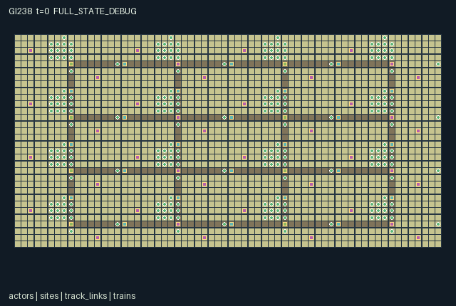

GI238 / SPATIAL
Railway Commons Republics
Release verification episode
Untrained uniform legal actions. Actual JAX state sampled along the full original episode; full-state debug camera. No human performance or learning claim.

Run this game
crucibles play --game 238
Start Python locally, then open the address printed by the terminal. Installation, multiplayer, takeover and keyboard controls →
Objective, rewards & ending
Exact task contract
{
"objective": "Maintain freight routes, feed towns and contest physical passage through shared station actions while preserving bridges and carriers.",
"natural_termination": "No early natural terminal; a fixed 1024-tick settlement season truncates.",
"interaction": "Building changes others routes; switches commit choices; destination passage controls eligibility; power depletes; braking and edge reservations cause queues; cargo affects origin and recipient.",
"observation_access": "Surveyed corridor geometry is public. Only selected nearest site/link/train/agent rows reveal operational state. Home identity grants no remote treasury or signal view. Explicit decaying local bulletins convey route information. Off-view events are debug-only."
}Declared per-step reward bounds: -4.0 to 4.0. Observability: partially_observable.
Rules
- Sixteen republics each control sixteen people. Towns share 24 rail links and eight autonomous four-unit trains; trains are not agent rows.
- Ore builds track and repairs bridges. Horizontal links start unfinished; vertical links are open alternatives. Walking crews must reach actual work sites.
- A switch chooses a cardinal link and commits for six ticks. Departures spend power. Red signals brake approaching trains over real remaining distance.
- Passage is public or home-origin only. Visitors at the station may declare it public; home actors may reclaim it. Physical presence matters.
- Trains need clear links, valid destination passage, bridges and power. Load/unload at parked trains; foreign cargo replenishes physical town stock.
- Weather damages bridges every 32 ticks. Crews can repair carriers; pantry grain is consumed every sixteen ticks. Accounting ends at 1024.
Original mechanism document (historical status wording retained)
# Railway Commons Republics Status: AUTHORED_NOT_EXECUTED. Source SHA256: c491d2ff054fbe8ac13430c940bb2c1e84719e3d6fe2d8d7cbb2fe5d69cbb491. All scripts/interventions are UNEXECUTED_AUTHOR_HYPOTHESIS. Native contract: A=256, O=231, U=19, H=1024; scalar int32 actions, float32 observations, fixed int32/bool state. Geometry 64 by 32, x right/y down. Family civilization_strategy. The four-by-four settlement graph has horizontal length-sixteen links and vertical length-eight links. Corridor cells are public geography; actual construction and damage live at physical link-center work sites. Foot agents travel through the map, and trains advance in integer world coordinates along their selected links. No browser geometry replaces these transitions. Each settlement owns a mine, farm and station/power depot. Horizontal routes need one extra ore unit, while vertical routes are open alternatives after a switch change. Eight trains begin with one grain unit from their origins. The switch commits for six ticks. Trains reserve edges, preventing head-on entry; multiple carriers may park at a station. Speed rises to two cells/tick and red signals brake within three remaining cells. Late red changes can cause overrun. Failed bridges damage health and cargo. Broken carriers stay visible at their actual location for repairs. Passage is a simple contestable public/home-origin declaration, not a full diplomacy interface. Foreign unloading adds two producer-stock units per cargo unit, an explicit trade/processing yield. Actors resolve in rotating order before train updates; a courier must staff arrival before a later departure or arrange a red stop. Work costs 0.001. Unloading pays courier 0.15, each recipient-town actor 0.04 and each origin-town actor 0.02. Bridge failure or red overrun costs origin actors 0.03; a failed bridge additionally charges its real last contributor 0.02 only when such an actor exists. Empty pantries at consumption cost local actors 0.02. Rewards are clipped to [-4,4]. Alternate investment, route, access, power, pantry and repair strategies are source hypotheses; no equilibrium, prosperity, performance or transfer is proved. ## Interface and visibility Surveyed corridor geometry is public. Only selected nearest site/link/train/agent rows reveal operational state. Home identity grants no remote treasury or signal view. Explicit decaying local bulletins convey route information. Off-view events are debug-only. Source entry lines: reset 33, legal_actions 72, observe 91, raw_step 123. Exact columns, normalizers, shapes and scene bindings are in manifest.json. Every selected entity slot ends with presence; hidden slots are zero. Crew identities remain fixed, while tools may change. A legal intent can still be blocked by earlier actors, missing simultaneous help, material shortages or geometry. Masked or out-of-range actions become Wait. Actor priority rotates as (loop index + t) mod A. No early natural terminal; a fixed 1024-tick settlement season truncates. Already-done raw calls preserve every state leaf and observation, return zero rewards and true per-agent dones, and preserve terminal causes. Nonterminal calls advance t exactly once. No autoreset or external state exists. Signed identities and sentinels use int32; reset keys are not copied into state. Observation bounds [0,1] and explicit reward clipping [-4,4] are source declarations, not numerical verification. ## Literal source evidence - candidate.py:160: build = (a == 6) & (ed[e] <= 1) & (w['cargo'][i] == 1) - candidate.py:169: switch = (a == 7) & station & (w['commit'][c] == 0) & (w['tool'][i] == 2) - candidate.py:182: unload = (a == 10) & station & jnp.any(parked) & (w['train_node'][b] == c) & (w['train_owner'][b] != c) & (w['train_load'][b] > 0) - candidate.py:231: permission = (w['permit'][dest] < 0) | (w['permit'][dest] == w['train_owner'][b]) - candidate.py:233: depart = (w['train_edge'][b] < 0) & (w['train_health'][b] > 0) & jnp.any(choices) & (w['track'][e] >= 2) & (w['bridge'][e] > 0) & (w['power'][node] > 0) & ~w['red'][node] & permission & ~occupied - candidate.py:244: brake = w['red'][dest] & (remaining <= 3) - candidate.py:247: damaged = moving & (w['bridge'][e] == 0) & (speed > 0) - candidate.py:251: overrun = arrive & w['red'][dest] - candidate.py:266: storm = (t % 32 == 0) & jax.random.bernoulli(key, 0.125, (24,)) - candidate.py:270: hungry = consume & (s['grain'] == 0) ## Human operation, provenance and limits Scene data binds actual positions, stock, tools and events. Human single-role/multiple-role control must call the unchanged native joint action interface. No UI has been implemented, opened or played by this author. Role rendering must restrict event presentation to visible entities; global event inspection is debug-only. Four independent world families are authored, without upstream code or assets. Supplied external reference files were permitted but not read. No prior game, results, IR, selection, training, heldout, memory, network, API, local model or numerical package was read/invoked. Current population/family240 and dispatch scope override inherited counts. Parentless initial window: 240 used/reserved of 512, feedback 0. Only bytes/SHA256, JSON/AST and literal structure are checked here. Candidate import/reset/step/observe/legal_actions and provided validators were never executed. Runtime shapes/dtypes, JIT/vmap, terminal replay, mask reachability, script success, finite numerical bounds, resource cost, animation, human playability, non-isomorphism, learning and transfer remain unverified. Independent authorized frozen-source integration must preserve actual failures. No acceptance, deployment or experimental result is authored.
Commands
Roles & abilities
agent_0 miner
agent_1 tracklayer
agent_2 signal worker
agent_3 courier
agent_4 farmer
agent_5 repairer
agent_6 miner
agent_7 tracklayer
agent_8 signal worker
agent_9 courier
agent_10 farmer
agent_11 repairer
agent_12 miner
agent_13 tracklayer
agent_14 signal worker
agent_15 courier
agent_16 miner
agent_17 tracklayer
agent_18 signal worker
agent_19 courier
agent_20 farmer
agent_21 repairer
agent_22 miner
agent_23 tracklayer
agent_24 signal worker
agent_25 courier
agent_26 farmer
agent_27 repairer
agent_28 miner
agent_29 tracklayer
agent_30 signal worker
agent_31 courier
agent_32 miner
agent_33 tracklayer
agent_34 signal worker
agent_35 courier
agent_36 farmer
agent_37 repairer
agent_38 miner
agent_39 tracklayer
agent_40 signal worker
agent_41 courier
agent_42 farmer
agent_43 repairer
agent_44 miner
agent_45 tracklayer
agent_46 signal worker
agent_47 courier
agent_48 miner
agent_49 tracklayer
agent_50 signal worker
agent_51 courier
agent_52 farmer
agent_53 repairer
agent_54 miner
agent_55 tracklayer
agent_56 signal worker
agent_57 courier
agent_58 farmer
agent_59 repairer
agent_60 miner
agent_61 tracklayer
agent_62 signal worker
agent_63 courier
agent_64 miner
agent_65 tracklayer
agent_66 signal worker
agent_67 courier
agent_68 farmer
agent_69 repairer
agent_70 miner
agent_71 tracklayer
agent_72 signal worker
agent_73 courier
agent_74 farmer
agent_75 repairer
agent_76 miner
agent_77 tracklayer
agent_78 signal worker
agent_79 courier
agent_80 miner
agent_81 tracklayer
agent_82 signal worker
agent_83 courier
agent_84 farmer
agent_85 repairer
agent_86 miner
agent_87 tracklayer
agent_88 signal worker
agent_89 courier
agent_90 farmer
agent_91 repairer
agent_92 miner
agent_93 tracklayer
agent_94 signal worker
agent_95 courier
agent_96 miner
agent_97 tracklayer
agent_98 signal worker
agent_99 courier
agent_100 farmer
agent_101 repairer
agent_102 miner
agent_103 tracklayer
agent_104 signal worker
agent_105 courier
agent_106 farmer
agent_107 repairer
agent_108 miner
agent_109 tracklayer
agent_110 signal worker
agent_111 courier
agent_112 miner
agent_113 tracklayer
agent_114 signal worker
agent_115 courier
agent_116 farmer
agent_117 repairer
agent_118 miner
agent_119 tracklayer
agent_120 signal worker
agent_121 courier
agent_122 farmer
agent_123 repairer
agent_124 miner
agent_125 tracklayer
agent_126 signal worker
agent_127 courier
agent_128 miner
agent_129 tracklayer
agent_130 signal worker
agent_131 courier
agent_132 farmer
agent_133 repairer
agent_134 miner
agent_135 tracklayer
agent_136 signal worker
agent_137 courier
agent_138 farmer
agent_139 repairer
agent_140 miner
agent_141 tracklayer
agent_142 signal worker
agent_143 courier
agent_144 miner
agent_145 tracklayer
agent_146 signal worker
agent_147 courier
agent_148 farmer
agent_149 repairer
agent_150 miner
agent_151 tracklayer
agent_152 signal worker
agent_153 courier
agent_154 farmer
agent_155 repairer
agent_156 miner
agent_157 tracklayer
agent_158 signal worker
agent_159 courier
agent_160 miner
agent_161 tracklayer
agent_162 signal worker
agent_163 courier
agent_164 farmer
agent_165 repairer
agent_166 miner
agent_167 tracklayer
agent_168 signal worker
agent_169 courier
agent_170 farmer
agent_171 repairer
agent_172 miner
agent_173 tracklayer
agent_174 signal worker
agent_175 courier
agent_176 miner
agent_177 tracklayer
agent_178 signal worker
agent_179 courier
agent_180 farmer
agent_181 repairer
agent_182 miner
agent_183 tracklayer
agent_184 signal worker
agent_185 courier
agent_186 farmer
agent_187 repairer
agent_188 miner
agent_189 tracklayer
agent_190 signal worker
agent_191 courier
agent_192 miner
agent_193 tracklayer
agent_194 signal worker
agent_195 courier
agent_196 farmer
agent_197 repairer
agent_198 miner
agent_199 tracklayer
agent_200 signal worker
agent_201 courier
agent_202 farmer
agent_203 repairer
agent_204 miner
agent_205 tracklayer
agent_206 signal worker
agent_207 courier
agent_208 miner
agent_209 tracklayer
agent_210 signal worker
agent_211 courier
agent_212 farmer
agent_213 repairer
agent_214 miner
agent_215 tracklayer
agent_216 signal worker
agent_217 courier
agent_218 farmer
agent_219 repairer
agent_220 miner
agent_221 tracklayer
agent_222 signal worker
agent_223 courier
agent_224 miner
agent_225 tracklayer
agent_226 signal worker
agent_227 courier
agent_228 farmer
agent_229 repairer
agent_230 miner
agent_231 tracklayer
agent_232 signal worker
agent_233 courier
agent_234 farmer
agent_235 repairer
agent_236 miner
agent_237 tracklayer
agent_238 signal worker
agent_239 courier
agent_240 miner
agent_241 tracklayer
agent_242 signal worker
agent_243 courier
agent_244 farmer
agent_245 repairer
agent_246 miner
agent_247 tracklayer
agent_248 signal worker
agent_249 courier
agent_250 farmer
agent_251 repairer
agent_252 miner
agent_253 tracklayer
agent_254 signal worker
agent_255 courier
Observation permissions
Training receives only the original observation rows. Role cameras use declared visibility; debug cameras are explicitly marked. Local benchmark records log debug exposure and role takeover history.
Exact observation layout
[
{
"slice": [
0,
10
],
"meaning": "Self x/63,y/31,town/15,tool/5,cargo/2,message/6,event/10,id/255,t/1024,storm phase/31",
"visibility": "self"
},
{
"slice": [
10,
74
],
"meaning": "8 nearest agents within Manhattan 4: x/63,y/31,town/15,tool/5,cargo/2,message/6,id/255,presence",
"visibility": "local"
},
{
"slice": [
74,
134
],
"meaning": "6 nearest sites within Manhattan 6: x/63,y/31,kind/2,stock/24,route/3,permit-code/16,red,commit/6,town/15,presence",
"visibility": "local"
},
{
"slice": [
134,
166
],
"meaning": "4 nearest link centers within Manhattan 9: x/63,y/31,endpoint-a/15,endpoint-b/15,track/3,bridge/6,(builder+1)/256,presence",
"visibility": "local"
},
{
"slice": [
166,
186
],
"meaning": "2 nearest trains within Manhattan 6: x/63,y/31,kind/2,load/4,origin/15,health/4,speed/2,destination/15,progress/16,presence",
"visibility": "local"
},
{
"slice": [
186,
205
],
"meaning": "Legal intent mask actions 0..18",
"visibility": "self"
},
{
"slice": [
205,
231
],
"meaning": "Explicit zero padding",
"visibility": "padding"
}
]Entity visibility & attributes
[
{
"id": "actors",
"kind": "agent",
"count": 256,
"position": [
"pos"
],
"active": [
"active"
],
"visibility": [
"agent_visible"
],
"attributes": [
{
"state_path": [
"team"
],
"meaning": "Home republic",
"display": "category"
},
{
"state_path": [
"tool"
],
"meaning": "0 mine,1 track,2 signal,3 courier,4 farm,5 repair",
"display": "category"
},
{
"state_path": [
"cargo"
],
"meaning": "0 empty,1 ore,2 grain",
"display": "category"
},
{
"state_path": [
"message"
],
"meaning": "Decaying local route/signal bulletin",
"display": "number"
}
]
},
{
"id": "sites",
"kind": "landmark",
"count": 48,
"position": [
"site_pos"
],
"active": [
"site_active"
],
"visibility": [
"site_visible"
],
"attributes": [
{
"state_path": [
"site_kind"
],
"meaning": "0 station/substation,1 mine,2 farm",
"display": "category"
},
{
"state_path": [
"site_stock"
],
"meaning": "Station power or producer stock",
"display": "number"
},
{
"state_path": [
"site_route"
],
"meaning": "0 east,1 south,2 west,3 north at station",
"display": "direction"
},
{
"state_path": [
"site_permit"
],
"meaning": "0 public, otherwise allowed origin republic plus one",
"display": "category"
},
{
"state_path": [
"site_red"
],
"meaning": "Red station signal",
"display": "flag"
},
{
"state_path": [
"site_timer"
],
"meaning": "Switch commitment remaining",
"display": "number"
}
]
},
{
"id": "track_links",
"kind": "landmark",
"count": 24,
"position": [
"edge_pos"
],
"active": [
"edge_active"
],
"visibility": [
"edge_visible"
],
"attributes": [
{
"state_path": [
"edge_a"
],
"meaning": "First endpoint republic",
"display": "category"
},
{
"state_path": [
"edge_b"
],
"meaning": "Second endpoint republic",
"display": "category"
},
{
"state_path": [
"track"
],
"meaning": "Construction level; at least two opens link",
"display": "bar"
},
{
"state_path": [
"bridge"
],
"meaning": "Bridge integrity",
"display": "bar"
},
{
"state_path": [
"edge_builder"
],
"meaning": "Last material contributor, minus one if none",
"display": "number"
}
]
},
{
"id": "trains",
"kind": "object",
"count": 8,
"position": [
"train_pos"
],
"active": [
"train_active"
],
"visibility": [
"train_visible"
],
"attributes": [
{
"state_path": [
"train_kind"
],
"meaning": "1 ore or 2 grain",
"display": "category"
},
{
"state_path": [
"train_load"
],
"meaning": "Units in four-unit carrier",
"display": "bar"
},
{
"state_path": [
"train_owner"
],
"meaning": "Cargo origin republic",
"display": "category"
},
{
"state_path": [
"train_health"
],
"meaning": "Carrier health; zero needs repair",
"display": "bar"
},
{
"state_path": [
"speed"
],
"meaning": "Cells advanced this tick",
"display": "number"
},
{
"state_path": [
"train_dest"
],
"meaning": "Destination republic",
"display": "category"
},
{
"state_path": [
"progress"
],
"meaning": "Cells along current link",
"display": "number"
}
]
}
]Actual verification & provenance
Per-game execution receipt
{
"game": "gi238",
"status": "PASS",
"verification_revision": 2,
"source_sha256": "c491d2ff054fbe8ac13430c940bb2c1e84719e3d6fe2d8d7cbb2fe5d69cbb491",
"seed": 20261101,
"runtime": {
"jax": "0.4.38",
"numpy": "1.26.4",
"devices": [
"TFRT_CPU_0"
]
},
"dimensions": {
"num_agents": 256,
"observation_size": 231,
"num_actions": 19,
"max_steps": 1024
},
"checks": {
"eager_reset": {
"status": "PASS",
"seconds": 11.177627563476562
},
"observation_spaces_legal_masks": {
"status": "PASS",
"seconds": 0.48984718322753906
},
"eager_step": {
"status": "PASS",
"seconds": 4.0427186489105225
},
"jit_reset": {
"status": "PASS",
"seconds": 1.487943172454834
},
"jit_step": {
"status": "PASS",
"seconds": 4.707684516906738
},
"eager_jit_integer_parity_float_measurement": {
"status": "PASS",
"seconds": 0.01844334602355957
},
"jit_vmap_reset": {
"status": "PASS",
"seconds": 2.2085301876068115
},
"jit_vmap_step": {
"status": "PASS",
"seconds": 9.220903873443604
},
"outer_autoreset_api": {
"status": "PASS",
"seconds": 8.583771705627441
},
"full_original_horizon_episode_and_render": {
"status": "PASS",
"seconds": 40.733633041381836
}
},
"human_scores": null,
"browser_controls": "PENDING",
"failures": [],
"elapsed_seconds": 83.99756002426147,
"float_parity_max_abs": 5.960464477539063e-08,
"numerical_parity": "UNDETERMINED_NONZERO_FLOAT_DIFFERENCE",
"raw_terminal_absorbing": "PASS",
"terminal_outer_reset": "PASS",
"episode_steps": 1024,
"scripted_random_returns": [
-0.764000040711835,
-0.7920000420417637,
-0.7670000409707427,
-0.7780000413767993,
-0.7790000414242968,
-0.7700000411132351,
-0.792000042158179,
-0.7930000420892611,
-0.7600000405218452,
-0.7600000406382605,
-0.7790000415407121,
-0.7690000409493223,
-0.7710000409279019,
-0.7760000411653891,
-0.6440000417642295,
-0.7960000422317535,
-0.8430000400403515,
-0.8370000397553667,
-0.8510000404203311,
-0.8170000388054177,
-0.8270000392803922,
-0.8390000398503616,
-0.8390000398503616,
-0.8180000388529152,
-0.8210000389954075,
-0.8380000398028642,
-0.8280000393278897,
-0.8430000400403515,
-0.8480000402778387,
-0.8350000396603718,
-0.842000039992854,
-0.873000041465275,
-0.7390000423183665,
-0.7460000410210341,
-0.759000041638501,
-0.5550000387011096,
-0.5780000415397808,
-0.5690000356407836,
-0.7290000402135774,
-0.7610000416170806,
-0.7440000408096239,
-0.7570000415435061,
-0.708000039216131,
-0.7470000410685316,
-0.7350000403821468,
-0.7380000423872843,
-0.7440000425558537,
-0.7450000408571213,
-0.7520000396762043,
-0.7540000416338444,
-0.7640000402461737,
-0.7650000404100865,
-0.7520000396762043,
-0.7640000403625891,
-0.7620000402675942,
-0.7670000405050814,
-0.7450000394601375,
-0.7750000407686457,
-0.7910000416450202,
-0.5890000388026237,
-0.7730000407900661,
-0.7680000405525789,
-0.7490000413963571,
-0.645000037853606,
-0.6760000394424424,
-0.6640000371262431,
-0.6650000390363857,
-0.6480000364826992,
-0.6740000412100926,
-0.6710000393213704,
-0.6610000369837508,
-0.67900003970135,
-0.6680000391788781,
-0.6520000365562737,
-0.6670000373851508,
-0.6370000377064571,
-0.6800000414950773,
-0.6480000381125137,
-0.6580000404501334,
-0.6630000406876206,
-0.7280000399332494,
-0.7210000378545374,
-0.7370000386144966,
-0.738000038661994,
-0.723000037833117,
-0.7530000411206856,
-0.7370000386144966,
-0.7460000390419737,
-0.7490000390680507,
-0.7430000406457111,
-0.7370000386144966,
-0.7410000388044864,
-0.7220000379020348,
-0.7420000405982137,
-0.707000037189573,
-0.6110000299522653,
-0.6170000351266935,
-0.6180000369204208,
-0.6220000351313502,
-0.591000035405159,
-0.5910000337753445,
-0.6150000385241583,
-0.5980000359704718,
-0.6310000374214724,
-0.4520000321790576,
-0.5890000354265794,
-0.6030000344617292,
-0.6010000359965488,
-0.5920000355690718,
-0.6140000366140157,
-0.4660000269068405,
-0.4750000275671482,
-0.6300000307383016,
-0.7580000393791124,
-0.7780000385828316,
-0.7710000382503495,
-0.7780000402126461,
-0.7670000396901742,
-0.7850000406615436,
-0.766000039759092,
-0.7520000390941277,
-0.48300002876203507,
-0.761000037775375,
-0.781000038725324,
-0.7590000411728397,
-0.7740000401390716,
-0.7650000378489494,
-0.7690000397851691,
-0.7620000406168401,
-0.7940000422531739,
-0.7770000414457172,
-0.7760000412818044,
-0.7970000422792509,
-0.7730000412557274,
-0.7960000423481688,
-0.7910000421106815,
-0.7830000417307019,
-0.7680000410182402,
-0.7850000417092815,
-0.7850000418256968,
-0.7790000415407121,
-0.8000000424217433,
-0.7790000415407121,
-0.7710000410443172,
-0.8030000409344211,
-0.5260000342968851,
-0.8000000410247594,
-0.7950000407872722,
-0.7980000409297645,
-0.8010000409558415,
-0.8050000411458313,
-0.8100000414997339,
-0.8060000413097441,
-0.7900000405497849,
-0.7950000407872722,
-0.7960000408347696,
-0.7800000399583951,
-0.7970000408822671,
-0.7940000406233594,
-0.830000042449683,
-0.7980000408133492,
-0.7900000405497849,
-0.8120000415947288,
-0.78800004045479,
-0.8030000411672518,
-0.799000040977262,
-0.8270000423071906,
-0.7890000405022874,
-0.7950000407872722,
-0.8040000410983339,
-0.8170000417158008,
-0.8120000414783135,
-0.6570000373758376,
-0.7980000409297645,
-0.8150000417372212,
-0.7960000408347696,
-0.7820000392384827,
-0.7470000393223017,
-0.7690000386210158,
-0.5930000277003273,
-0.7600000381935388,
-0.7430000391323119,
-0.7640000383835286,
-0.7420000390848145,
-0.7650000401772559,
-0.752000039559789,
-0.7770000390009955,
-0.7590000381460413,
-0.7620000400347635,
-0.7620000400347635,
-0.7510000377660617,
-0.621000029030256,
-0.8160000402713194,
-0.8140000401763245,
-0.8210000405088067,
-0.8050000397488475,
-0.8080000398913398,
-0.8340000411262736,
-0.8160000401549041,
-0.8120000400813296,
-0.8330000410787761,
-0.8050000397488475,
-0.8090000399388373,
-0.8310000409837812,
-0.8230000406038016,
-0.8240000406512991,
-0.8240000406512991,
-0.8080000398913398,
-0.8010000408394262,
-0.8030000391881913,
-0.7990000389982015,
-0.6480000292649493,
-0.7930000387132168,
-0.8210000400431454,
-0.7770000396994874,
-0.8170000398531556,
-0.8080000394256786,
-0.8080000394256786,
-0.7960000388557091,
-0.8010000390931964,
-0.7860000383807346,
-0.805000041029416,
-0.7990000389982015,
-0.8060000410769135,
-0.7410000372910872,
-0.7390000371960923,
-0.7540000379085541,
-0.7530000378610566,
-0.7520000378135592,
-0.7660000402247533,
-0.7580000398447737,
-0.7620000382885337,
-0.7390000371960923,
-0.6440000301226974,
-0.759000041638501,
-0.756000038003549,
-0.7530000396072865,
-0.7620000382885337,
-0.7610000382410362,
-0.7640000383835286,
-0.826000040746294,
-0.8190000404138118,
-0.8300000409362838,
-0.8070000398438424,
-0.8310000409837812,
-0.8020000396063551,
-0.8270000407937914,
-0.8280000408412889,
-0.6690000364324078,
-0.8310000408673659,
-0.8430000415537506,
-0.8230000404873863,
-0.8190000404138118,
-0.8010000394424424,
-0.7940000392263755,
-0.8160000402713194
],
"terminal": true,
"demo_information": "FULL_STATE_DEBUG",
"demo_frames": 26,
"render_roles_checked": 256
}Chromium control verification
{
"status": "PENDING"
}Original identity and file hashes
{
"id": 238,
"key": "gi238",
"title": "Railway Commons Republics",
"summary": "",
"tags": [],
"family": "spatial",
"dimensions": {
"num_agents": 256,
"observation_size": 231,
"num_actions": 19,
"max_steps": 1024
},
"source_sha256": "c491d2ff054fbe8ac13430c940bb2c1e84719e3d6fe2d8d7cbb2fe5d69cbb491",
"manifest_sha256": "af1de010c52cad0624e40c1047c77a11464cad0f2b0244d3816ccae7308c1872",
"files": [
{
"file": "candidate.py",
"sha256": "c491d2ff054fbe8ac13430c940bb2c1e84719e3d6fe2d8d7cbb2fe5d69cbb491",
"bytes": 20640,
"origin": "work/exp_2/game_incubator_v3/sources/game-v3-00238/attempt_00/candidate.py"
},
{
"file": "manifest.json",
"sha256": "af1de010c52cad0624e40c1047c77a11464cad0f2b0244d3816ccae7308c1872",
"bytes": 53020,
"origin": "work/exp_2/game_incubator_v3/sources/game-v3-00238/attempt_00/manifest.json"
},
{
"file": "scene.json",
"sha256": "158e88c861b9dbb7e1b8f3b92fc16f1bc92840ca715ee8f5e294bdd6f30fa2f2",
"bytes": 9122,
"origin": "work/exp_2/game_incubator_v3/sources/game-v3-00238/attempt_00/scene.json"
},
{
"file": "mechanism.md",
"sha256": "2cd850ecb992b067cd35900b74103637ce419914638453b1aa89c749491dddb7",
"bytes": 5742,
"origin": "work/exp_2/game_incubator_v3/sources/game-v3-00238/attempt_00/mechanism.md"
},
{
"file": "playthrough.json",
"sha256": "136efcb81fd7afb15ec946fc68397ec4c165ac81920d74aa9a553e6b0fa13135",
"bytes": 140272,
"origin": "work/exp_2/game_incubator_v3/sources/game-v3-00238/attempt_00/playthrough.json"
}
],
"original_status": "SOURCE_ONLY",
"original_saved_replay": false,
"release_validation": "PASS",
"human_scores": null,
"browser_validation": "PENDING"
}